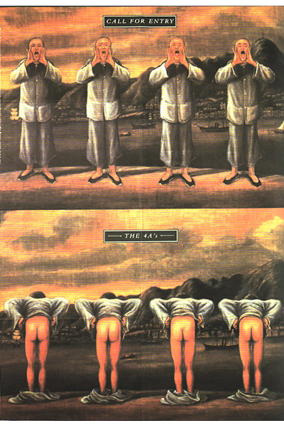
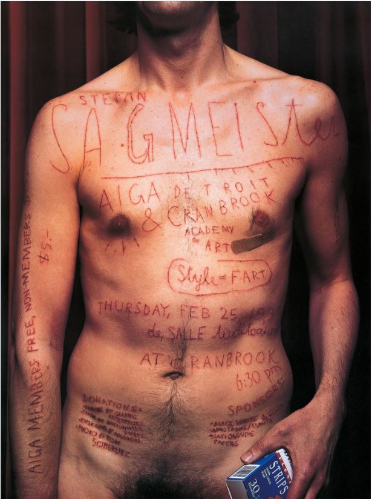
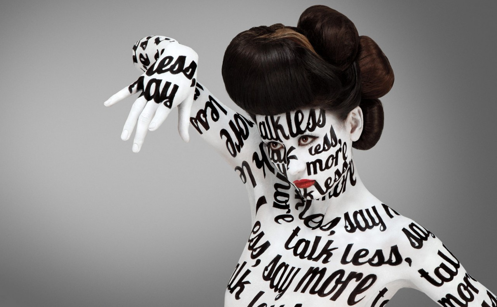
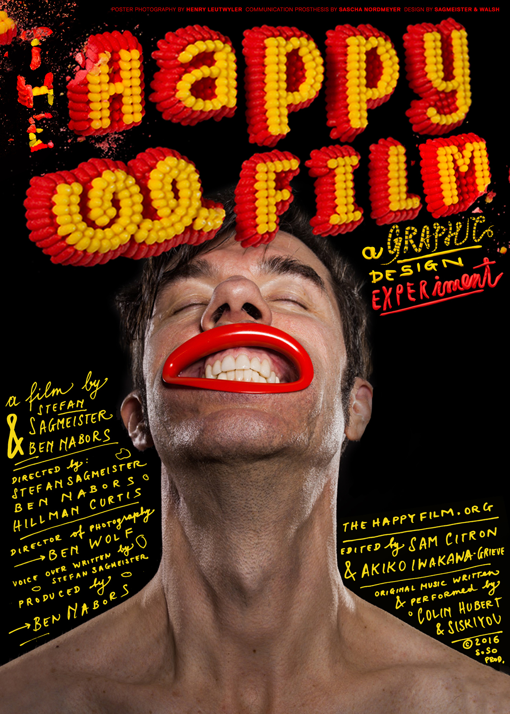

Stefan Sagmeister:
Creative Genius,
or Exhibitionist?
Introduction
Stefan Sagmeister is a designer, typographer, and story-teller / performance artist based in New York. His work is highly distinctive, not to mention controversial. Sagmeister can be “recognised for his unorthodox, provocative designs” (Heller, 2013), as he frequently breaks the norms of art & design in ways that are shocking to many. Despite this, his designs are inspiring to many artists and designers everywhere; pushing more people to bend traditional rules of art.
This essay will explore and discuss Sagmeister’s works, questioning whether they were the result of creative genius, or if they were a form of exhibitionism.
Background and Early Career
Stefan Sagmeister was born on August 6th 1962 in Bregenz, Austria. Sagmeister began Engineering at college but he later decided that engineering was not for him and opted for a graphic design degree at the University of Applied Arts Vienna instead. However, this was not when his design career began as, at age fifteen, he was a part of a left-wing magazine called Alphorn. He had been writing for this magazine when he realised that lay-out and design was far more appealing, therefore sparking his interest in design (famousgraphicdesigners.org).
In 1987, Sagmeister was given a scholarship at the New York Pratt Institute, and after he graduated he began work in China. The company he worked for had asked him to design a poster for the Advertising Awards Ceremony (The 4As). This poster portrayed a traditional Cantonese-style image of four men shouting, and below it was them bending over and revealing their bottoms. It appeared that the audience did not understand, nor appreciate Sagmeister’s dark humour, and due to his bizarre and inappropriate take on the task, he was criticised harshly and so later moved back to New York (Singgih, 2012).
It was here that he began his company “Sagmeister Inc.” in 1993 and started by designing CD covers. Sagmeister later formed a partnership with Jessica Walsh (in 2010) and his studio was renamed to “Sagmeister & Walsh Inc.”. The “nude” motif that was displayed in his 4As piece would later reappear in his more recent and famous works, which is what made me beg the question of whether or not Sagmeister is an exhibitionist (Heller, 2013).
Sagmeister's CD Cover Designs
When Sagmeister opened “Sagmeister Inc.”, he focussed on CD cover design, and he worked with very well-known bands such as The Rolling Stones, Aerosmith, and Lou Reed. Sagmeister went on to design for the David Byrnes and Brian Enos album “Everything That Happens Will Happen Today” in 2005, which he ended up receiving a Grammy Award for. This cover included a digital drawing of a house, inspired by one of the key songs within the album called “home”. The drawing included some indications towards what the song was about. At first glance, the house looks beautiful and pristine, however, upon further inspection, the stairs are cracked, the ground is stained, and there appears to be a figure eerily staring out of a window upstairs.
"Having guts has always worked out for me."
-Stefan Sagmeister
This is just one of Sagmeister’s designs that provokes the audience to really think about the reasons behind every little detail, therefore pointing my view more towards the idea that he may just truly be a creative genius. Another Grammy award winning design by Sagmeister was the Talking Heads “Once in a Lifetime” CD packaging, which was a collection of paintings consisting of “all of my visual icons: babies… and bare naked people” (Sagmeister.com).
Sagmeister's Most Provocative Works
Sagmeister has produced many captivating and bold pieces in his time. One of the most controversial being a poster he produced for a lecture he gave in Detroit. This came from a collection of posters Sagmeister had designed for the American Institute of Graphic Arts (AIGA.org). The poster included a splash image of Sagmeister's naked torso with the details of the lecture carved into his skin using an x-acto knife. Sagmeister wanted to convey the blood, sweat and tears that went into his work, and he believed that doing this digitally would not have been as authentic (Robson, 2017).
Created in 1999, this piece stood out from other designs and received many mixed reviews. Some were shocked by the unconventional methods used in making this piece, whilst some were inspired.
Other inappropriate pieces would include Sagmeister’s announcement posters for when he opened his design studio in 1993. These consisted of a full nude image of Sagmeister, captioned with information about Sagmeister Inc. He was warned that this would only make him lose clientele (Robson, 2017), but it did quite the opposite. He then later recreated these poster cards with Walsh when she joined the company. These types of “stunts” could be a big reason behind why some may call Sagmeister an exhibitionist. However, designs like these are what gained so much attention and intrigue towards his work. It was something entirely bizarre and new, he was changing how people viewed design.

Sagmeister then continued to place typography on the human face and body within his more recent pieces, including one of his most famous music-related designs; the album poster for “Set The Twilight Reeling” by Lou Reed in 1996 (Baross, 2016). This piece included lyrics from songs within the album written all over Lou Reed’s face. This poster would become more famous than the CD cover (Coles, 2013), which earned Sagmeister another Grammy nomination (Grammy.com).
Another notable design where Sagmeister incorporated the use of skin as his canvas, was the work he did with his partner Jessica Walsh for the Aizone Department Store Campaign in 2011. With words like “THE TIME IS NOW” and “talk less, say more” painted onto ladies bodies using different typography for each piece. Using a human canvas to display design yields far more striking results, making “type come alive” (Strizver, 2016).
Sagmeister's Sabbaticals and Happiness
One year in every seven, Sagmeister takes a break from his work in order to refresh and restart his mind. To Sagmeister, a sabbatical is also a "creative experiment". Because design touches him emotionally, he likes to take this step back every seven years to truly appreciate it and allow himself to just come up with his own ideas, instead of ideas for others within his commissioned work.
It was during his most recent sabbatical that he came up with the idea for a project that brings him great pride (Arctic Paper interview, 2015). He had gone into the sabbatical after arranging a seminar with the theme of “Design and Happiness”, and, as his sabbatical progressed, so too did this theme. In an interview for Arctic Paper in 2015, Sagmeister said he “tried to do something meaningful with all my free time” and he ended up making a documentary called “The Happy Film”, released in 2016.
With this project, he was “blurring the line between art and design” (Prins, 2017), and taking a much more personal approach to his work. To Sagmeister, this project was a documentary of his “painfully personal experiences… a journey travelling closer to him than ever intended” (thehappyfilm.org, 2016). The Happy Film recorded Sagmeister conducting three different experiments using “meditation, drugs, and therapy” (thehappyfilm.org, 2016) to see if he could affect his own happiness, posing (to himself) the question, “can I redesign my own personality and happiness?” taking the idea of design to a whole new level.
"Thinking life will be better in the future is stupid, I have to live now"
-Stefan Sagmeister
In another interview for Luerzer’s Archive, Sagmeister was asked about his opinion on creativity and the possibility of its source being in melancholy. He replied with “I do much better work… when I am in good shape. In times when I am down, I produce nothing at all.” To me, this mind-set could have been what lead him to come up with such a radical idea; to experiment with his own happiness and personality.
Many may think that taking an entire year off work is foolish, however, Sagmeister’s unorthodox method clearly works well. A year without focussing on commission design work has allowed him to ensure that his creative process can stay fresh, and that he doesn’t experience a “writer’s block” per se. I believe that someone who produces work as extraordinary and intriguing as Sagmeister could easily afford an extended sabbatical.
Conclusion
One may argue that Sagmeister used his work as a form of exhibitionism because he frequently displayed his nude body, or the nude/semi-nude body of others within his designs. However, I believe that he most likely did this to cause controversy and gain attention (Robson, 2017), which it did successfully. Sagmeister was also just captivated by the human form which could be why he so often put his on display. I also think that Sagmeister seems to have a fascination with the human form and how it can be used for design, just as any other surface can. I think the more provocative the piece, the better; Sagmeister’s most outrageous and confusing designs are his most famous and most inspiring. This is why I have come to the conclusion that Sagmeister’s work is the result of pure creative genius. Without his extremely misunderstood and, often strange ideas, Sagmeister would be nowhere near as influential in the world of graphic design as he is. Something that is very admirable to me about Sagmeister is that he’s not afraid to step outside of the box and be different – even at the risk of losing money or business opportunities, and to me, that is a creative genius.
Bibliography
| Arctic Paper. (2016, July 13). "Star Designer Stefan Sagmeister Always Finds New Paths." Retrieved from Arctic Paper: arcticpaper.com | Baross. (2016, May 11). "Stefan Sagmeister: Analysis of a Designer." Retrieved from Wordpress: editingabi.wordpress.com |
| Coles. (2013, October 28th). "Set the Twilight Reeling by Lou Reed." Retrieved from Fonts in Use: fontinuse.com | Famous Graphic Designers. (2020). "Stefan Sagmeister." Retrieved from Famous Graphic Designers: famousgraphicdesigners.org |
| Grammys. (n.d.). "Artist - Stefan Sagmeister." Retrieved from Grammys: grammy.com | Heller. (2013, September 2). "Stefan Sagmeister." Retrieved from American Institute of Graphic Design (AIGA): aiga.org |
| Luerzer's Archive. (2015). Interview - Issue 3/2015. Retrieved from Luerzer's Archive: luerzersarchive.com | Museum of Modern Art. (n.d.). MoMA, Collection - Sagmeister AIGA Detroit. Retrieved from Museum of Modern Art: moma.org |
| Prins. (2017, August 4). "Stefan Sagmeister." Retrieved from Behance: behance.net | Robson. (2017). "AIGA Detroit Poster (1999)." Retrieved from Medium: medium.com |
| Sagmeister - The Happy Film. (n.d.). "The Happy Film." Retrieved from The Happy Film: thehappyfilm.org | Sagmeister. (n.d.). Sagmeister - Work. Retrieved from sagmeister.com |
| Singgih. (2012, September 13). "Stefan Sagmeister." Retrieved from Wordpress: primasinggih.wordpress.com | Strizver. (2016, January 20). "TypeTalk: The Typographic Expressions of Stefan Sagmeister." Retrieved from Creative Pro: creativepro.com |